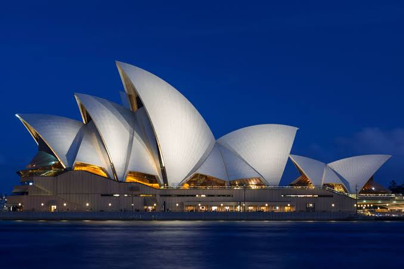
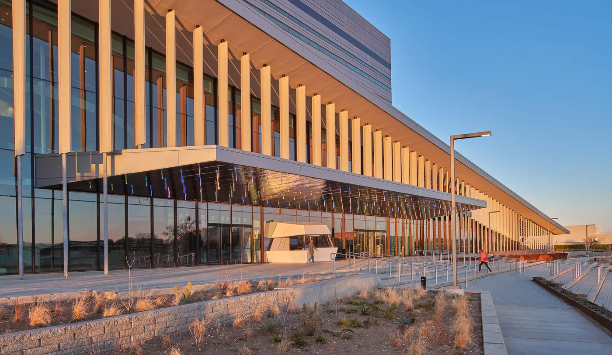
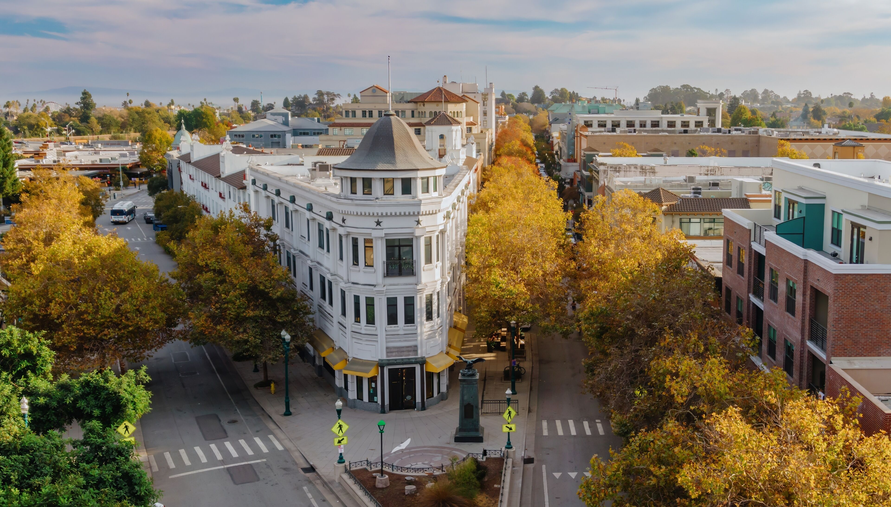
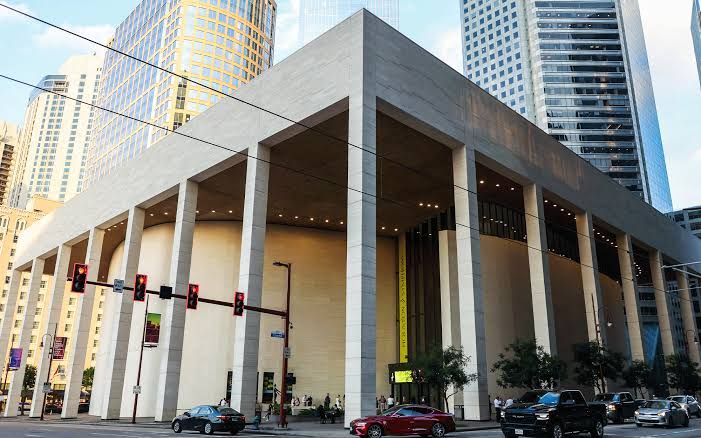

Places I Wish to Visit in the Future
This is my curated collection of places I want to visit in the future someday. These include beautiful places like Paris or Santa Cruz, or places that reflect what I view as fun places like Disneyland. These are not necessarily places that I've never been to, however, I sincererly think that I will make the time to go to every one of these places.
Eiffel Tower
Paris | France
Not the most creative idea for a place to go on vacation, Paris is one of those locations that most people want to visit. Maybe its overrated, and the romantic impression of Paris is exagerrated, but I think it is worth seeing what makes the place so special.

Sydney Opera House
Sydney | Australia
The second place that I've never been to is the famous opera house in Sydney, Australia. I've alway had a passion for music, and attend concerts is a nice way to enjoy music performed by talented and passionate people. The Opera House in particular has a beautiful architecture, even among the many concert halls in the world.

Buddy Hall
Lubbock | Texas
I've been to Lubbock many times before, and I've walk past this place a lot of times, but I've never stepped inside. Maybe it's because I didn't know that it was an arts center. Whenever I was near the building, there wasn't a lot of people near the entrance, so perhaps I never visited it at the right time. If I go to Lubbock again, I will finally see a performance at this place.

Santa Cruz
Santa Cruz | California
California is an outstanding state with many exciting places to visit, and Santa Cruz is the picturesque fun location. It has many tourist attractions like its beach boardwalk, amusement park, and generally nice weather. I always view Santa Cruz as the place to relax from the stresses of life.
Disneyland
Orlando | Florida
Like Paris, it's another cliche place that I would like to go to. Very fun, but also expensive. I skipped a field trip here back in highschool, and I sometimes wonder if its true to its hype.

Jones Hall
Houston | Texas
While this place doesn't seem special compared to the other places, Jones Hall in Houston has alway been accessible for me to visit. I've been to the concert hall at least twice already, but I haven't found the time to go in years.